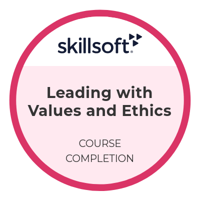
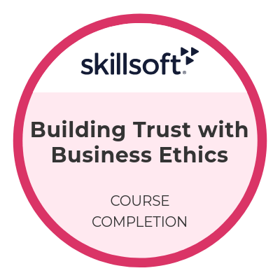
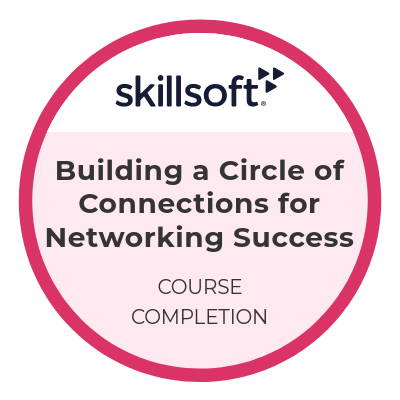
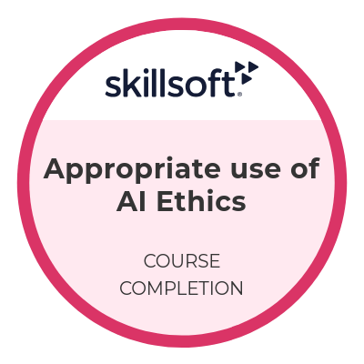

Completed degree
Bachelor of Science
Cybersecurity and Networking
DeVry University · 2026
Summa Cum Laude
Academic achievement & continued learning
My academic credentials and professional development course completions.
Completed degree
Cybersecurity and Networking
DeVry University · 2026
Summa Cum Laude
Academic certificate
Cyber Security
DeVry University · March 2025
With Honors
View undergraduate certificate →Professional development
These badges represent completed courses in ethics, networking, and career development. They are separate from industry certification exams.

Skillsoft · Course completion
Skillsoft · Course completion

Skillsoft · Course completion

Skillsoft · Course completion

Skillsoft · Course completion
Skillsoft · Course completion
Next goal
A certification goal as I continue developing my cybersecurity knowledge.
See how I apply my learning →